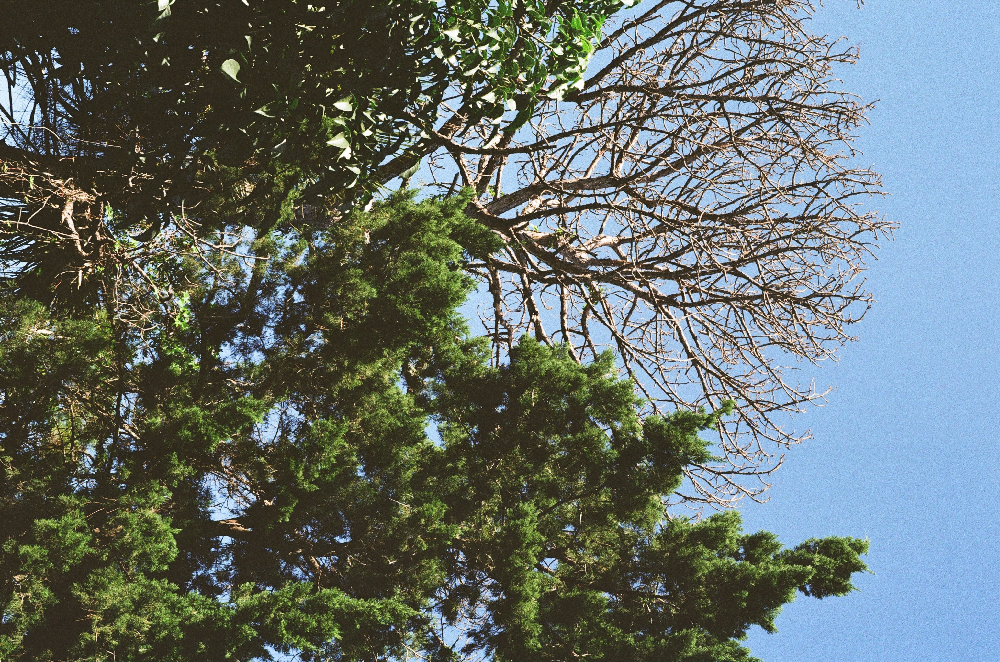

I get home when it’s nearly dark these days. The best I can hope for in terms of parity or splendor is catching sight of a flock of ducks in flight — on their way home back to the preserve, silhouetted against a twilit sky. But after a moment, they’re gone and I head inside, not to come out again for approximately another 14 hours. I will spend these hours mostly looking at screens of various sizes, in various rooms, and sleeping. It is a paralyzing Time Machine.
The most obvious thing in the world is that it doesn’t have to be this way. But maybe I let myself succumb to malaise, engrossed in a scrolling tapestry of cultivated stories because I like it — because it’s comforting.I’ve dug my heels in consumption’s quicksand because maybe I know it will never be deep enough to drown me. My head will remain above the surface so my eyes can be trained on more creation than can be devoured. And what a shameful waste it is to scorn what’s made for you, so an hour spent looking at a tree is heresy and must not be mentioned. The trees have been there before our tastes could be developed and they are only interesting when they are pointed out by an expert of such taste. The trees have all been mapped and named.
My mortal anxiety is founded not in what I’ll miss out on doing, but instead on what I’ll miss out on seeing. My heaven is as a wanderlust phantom treating the revolving globe as eternal cable tv. To see where we go is the goal — putting in any effort towards advancement myself is simply wasteful arrogance.
But of course this is not what I tell myself. I tell myself I have great things to contribute. Oh, I have so many ideas when I let myself think them. I have beliefs that could have resonance if I simply collaborated. I simply need more time. If only I had more time to create, I would…what? Create? Create what? With what?
The truth is, when I have that precious time I usually jump right back into the quicksand — not because I love it there, but because it’s easier than getting up. But I've been trying more and more to get up. To see some trees, maybe. To see some things that aren’t there for me, are there for themselves, are there by accident. There has never been enough time. There will always be things to miss. So maybe it’s better to look at a tree that's been seen before, but not by you. The time will have passed all the same, but at least you’ll have made a choice.
